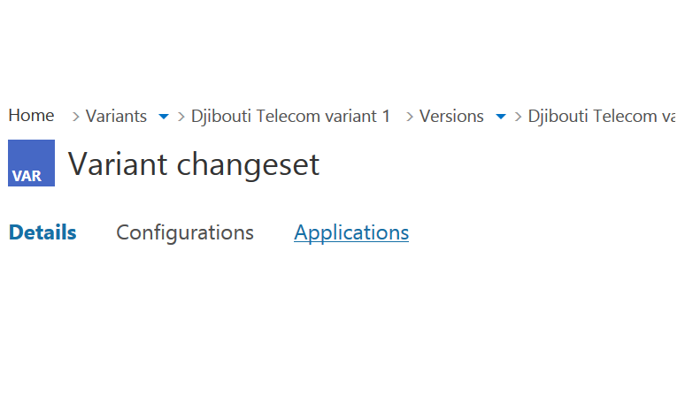
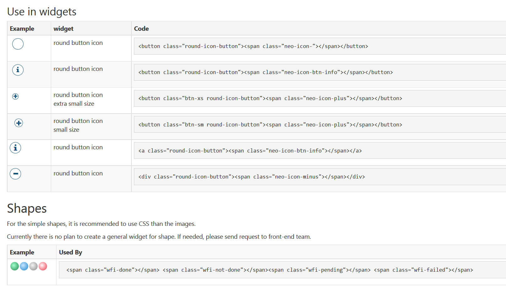
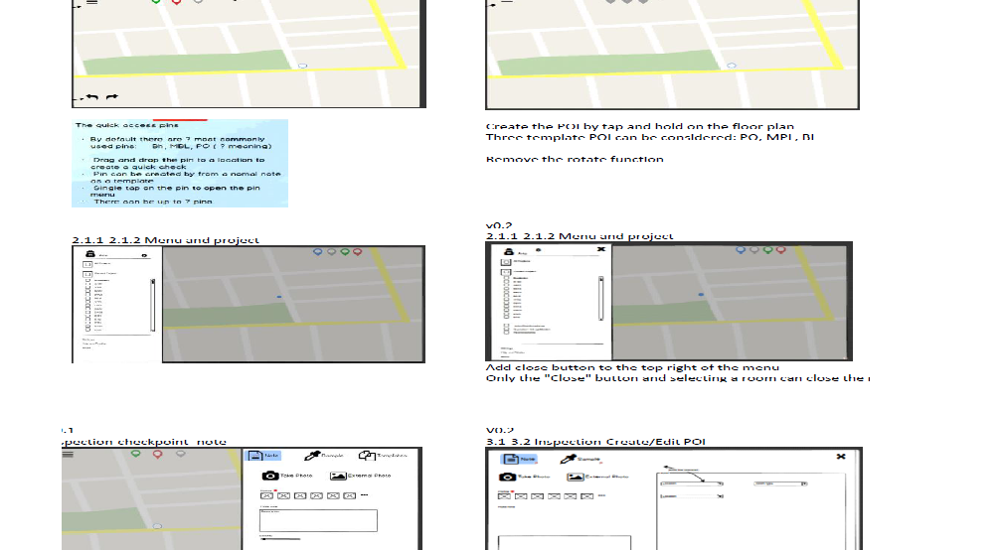

Portfolio

Deep Navigation
I need to design and prototype the navigation system for a PVP web application with very limited information. I need to make the navigation flexible enough so that it adapts to the information hierarchy in any width and depth.

Widget library
I create a Widget library to be used in frontend development team. The library lists all the UI elements used in the website and how each of them should be used in html. Developer are able to use the component directly or combine elements to create new widgets.

Redesign web application for tablet
The web application was origionally built on desktop. I redesign its interface in order to adapt a tablet interface and touch input.